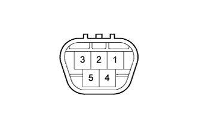

Windshield Wiper Motor Assembly Inspection |
| 1. Inspect Windshield Wiper Motor Assembly |
 |
LO Operation Inspection
Connect the battery positive (+) to terminal 1 (+1) and the battery negative (-) to terminal 5 (E) of the connector, and check that the windshield wiper motor assembly operates at low speed (LO).
| Battery connection | Specified Condition |
|---|---|
| Battery positive (+) → 1 (+1) Battery negative (-) → 5 (E) | Operates at low speed (LO) |
HI Operation Inspection
Connect the battery positive (+) to terminal 4 (+2) and the battery negative (-) to terminal 5 (E) of the connector, and check that the windshield wiper motor assembly operates at high speed (HI).
| Battery connection | Specified Condition |
|---|---|
| Battery positive (+) → 4 (+2) Battery negative (-) → 5 (E) | Operates at high speed (HI) |